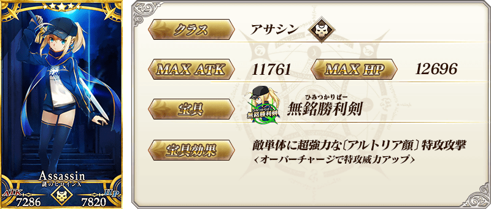
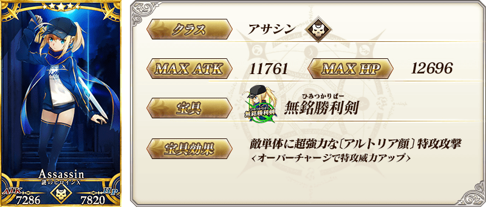
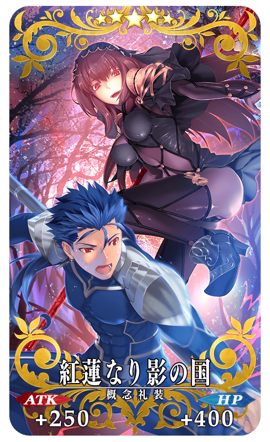
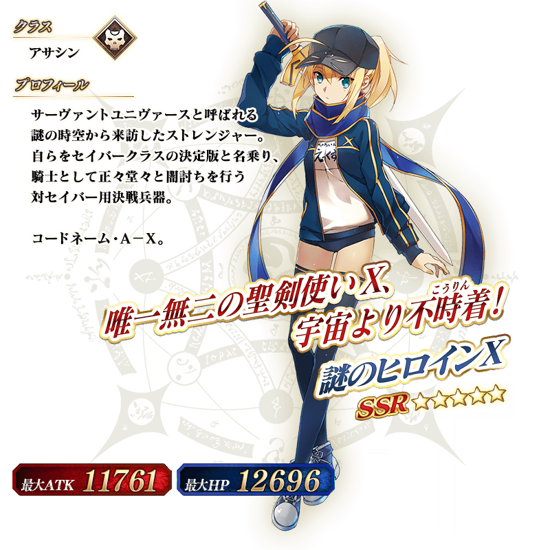

◆「Saber Wars２舉辦前夕Pick Up召喚」期間◆
期間:2019年10月26日(六) 17:30～11月13日(三) 11:59
舉辦期間限定「Saber Wars２舉辦前夕Pick Up召喚」！ ※未通過終局特異點的狀態也能進行「Saber Wars２舉辦前夕Pick Up召喚」。
本次為了記念期間限定活動「Saber Wars２ ～邁向初始的宇宙～」的決定舉辦，「★5(SSR)謎之女主角X(Assassin)」以期間限定登場！
詳情請在聖晶石召喚畫面左下的召喚詳細確認。
並且，於2016年的「謎之女主角XPick Up召喚」與2018年的「復刻 Saber Wars ～Lily的宇宙武者修行～Pick Up召喚(每日交替)」登場的期間限定概念禮裝「★5(SSR)紅蓮なり影の国」「★4(SR)みこっと！花嫁修業」「★3(R)正射必中」Pick Up！
◆有關從者的注意◆
※「★5(SSR)謎之女主角X(Assassin)」在Pick Up期間結束後不會追加到故事召喚。
◆有關概念禮裝的注意◆
※請注意做為抽出對象的期間限定概念禮裝只限「★5(SSR)紅蓮なり影の国」「★4(SR)みこっと！花嫁修業」「★3(R)正射必中」，其他的期間限定概念禮裝為抽出對象外。
※「★3(R)正射必中」在Pick Up期間中，也能靠友情點數召喚獲得。
※請注意自友情點數召喚抽出的「★3(R)正射必中」在自動變還設定登錄★3(R)概念禮裝的情況，會變成自動變還的對象。
※「★5(SSR)紅蓮なり影の国」「★4(SR)みこっと！花嫁修業」「★3(R)正射必中」在期間限定活動「Saber Wars２ ～邁向初始的宇宙～」中沒有活動加成。
Pick Up期間中，期間限定從者、期間限定概念禮裝的出現機率提升！
11次召喚中確定1張★4(SR)以上和確定1位★3(R)以上的從者！ ※確定★4(SR)以上包含從者和概念禮裝。 ※本頁面皆為開發中圖片。會有與實際圖片相異的情況。
 
※上述「★5(SSR)謎之女主角X(Assassin)」的卡面為靈基再臨第2階段。

※上述「★5(SSR)謎之女主角X(Assassin)」的卡面為靈基再臨第2階段。

|  |
★★★★★SSR |

|
★★★★SR |

|
★★★R |
 ※上述「★5(SSR)謎之女主角X(Assassin)」的立繪為靈基再臨第2階段。
介紹「★5(SSR)謎之女主角X(Assassin)」的寶具演出！
在「Fate/Grand Order」官方網站內的公告中，以影片公開寶具演出，敬請確認。
關於期間限定活動「Saber Wars２ ～邁向初始的宇宙～」和『「Saber Wars２ ～邁向初始的宇宙～」舉辦前夕宣傳活動』的詳情，請自下述橫幅確認。
■「Saber Wars２ ～邁向初始的宇宙～」詳細情報

■「Saber Wars２ ～邁向初始的宇宙～」舉辦前夕宣傳活動詳細情報